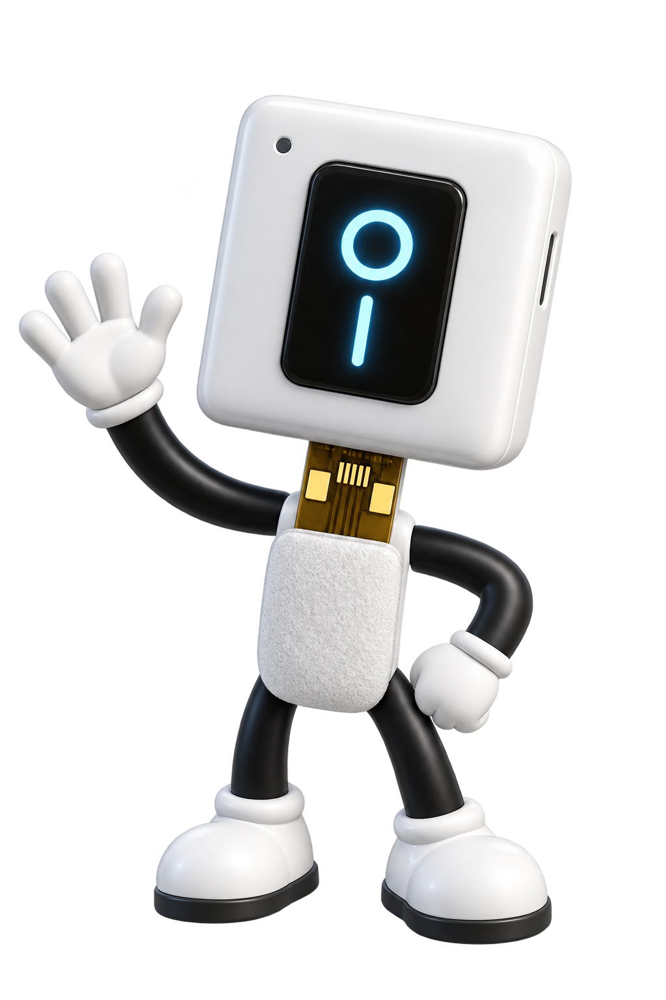
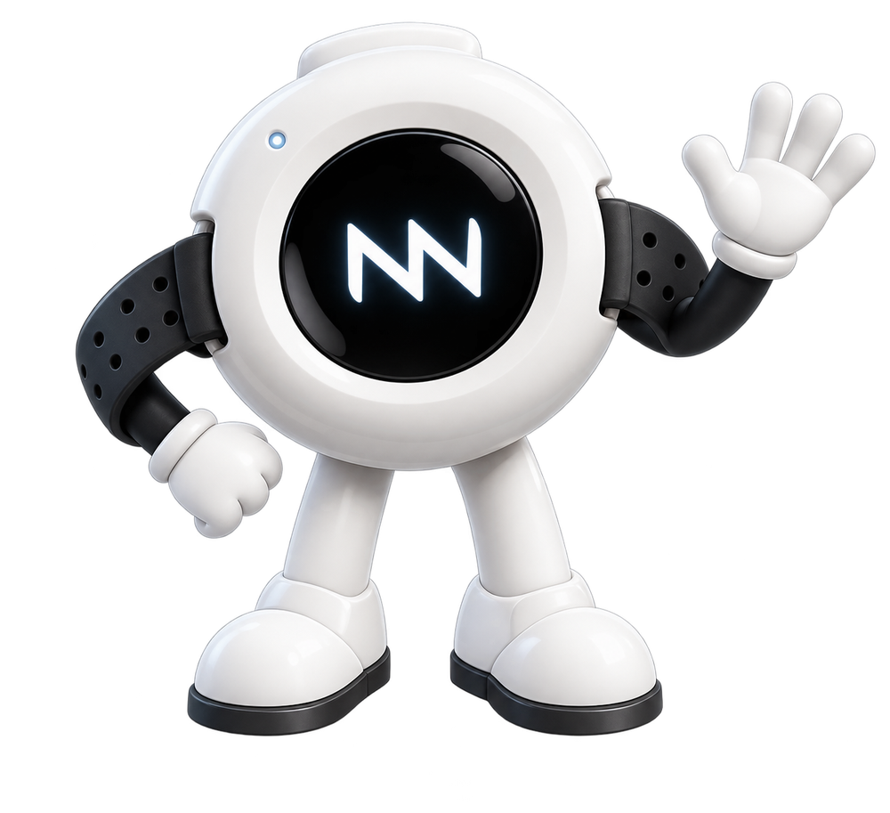

CONTROL BIONICS SUPPORT HUB
Hi! Let's get you sorted 👋
Whether you're a parent, a student, a therapist, or just getting started — you're in the right place. Pick NeuroStrip or AAC below, and a friendly step-by-step guide (with pictures!) will walk you through it.

or
START HERE
What are you here for?
Two simple areas: NeuroStrip for muscle sensors and movement, and AAC for communication devices.

NEUROSTRIP SUPPORT
NeuroStrip
Pictures and simple steps for setting up, placing, and using NeuroStrip — however you're using it.
Nero
What are you using it for?
Step-by-step guides
AAC SUPPORT
AAC Products & Access
Pick your device below to get simple, illustrated setup steps.
Nodi
Which device do you have?
Popular quick fixes
POPULAR SOLUTIONS
Quick fixes
The most common things people get stuck on.
FRONTLINE GUIDE
Ask your support guide
Not sure where to look? Just ask in your own words — Nero covers NeuroStrip, Nodi covers AAC.
Choose a section first
Select NeuroStrip or AAC and the right support mascot will take over.
Guide: What can I help you with?
STILL STUCK?
We're happy to help directly
If the guides above didn't sort it out, just reach out — no question is too small.